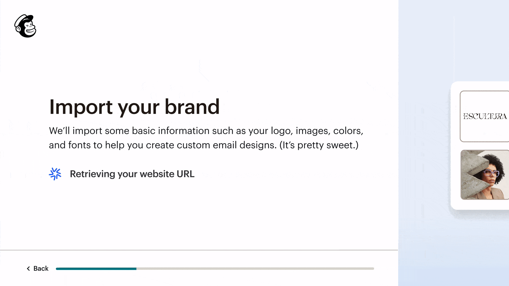
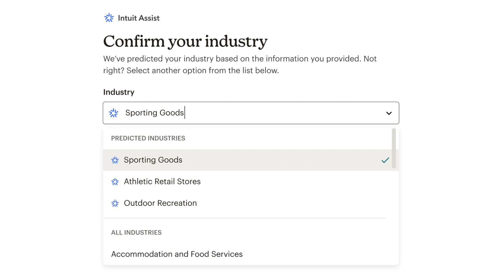

Intuit Mailchimp · Account Setup
New users were abandoning setup before reaching Mailchimp's value, facing 10–12 screens of manual data entry. Instead of asking them to manually input their info, we used AI to autofill it for them. A multi-phase initiative that started with a single hunch and ended with a platform-wide personalization system.
The hypothesis that started everything
We started with a foundational insight: if users saw Mailchimp correctly predict their website, it would create immediate confidence in the platform's intelligence, carrying that trust forward into Creative Assistant and beyond. The animation wasn't decorative. It was the crucial to showing the user we had done some work for them. Seeing the system actively working for them created a fundamentally different response than simply presenting a pre-filled form.

"Design can build trust in technology, not by explaining how it works, but by letting users feel it working."
Built on Phase 1's trust foundation
We extended the same trust mechanic to industry detection. By showing users we understood their business type, we unlocked downstream personalization across the entire platform, recommended templates, pre-filled automations, relevant integrations. As we did before, we only showed AI when we were confident. I never wanted to expose users to an "AI failed to find a result" moment. Giving users clear visibility and easy control, confirm the prediction or correct it, turned AI involvement into a trust signal rather than something to hide.

Design choices with outsized downstream impact
We only surfaced AI predictions when confidence was high. Showing uncertain results would erode the exact trust we were building. 82% coverage at high confidence beat 100% coverage at any confidence, and the experiment data backed it.
Users could override everything. This wasn't just a UX courtesy. It was how we maintained data quality downstream. Closely related industries were listed directly below the most likely prediction for quick comparison.
Industry unlocks more specific personalization downstream, working together with the users' website for more specific granularity which AI can use to surface personalized templates, automations, and integrations.
Aligning with Quickbooks before the design phase was a proactive measure to ensure we would be ready for seamless data integration once the platforms were connected.
Where the system is heading
The logical endpoint of this work is a setup experience where Mailchimp already knows who you are. Business address, team details, brand assets, connected tools, all pulled with little to no manual input from the user required. A 10-screen flow becomes a 2-screen confirmation.
Using our AI capabilities, the setup flow transforms from a form into a handshake. The platform already knows your business, it just needs you to say yes.
Address, industry, and even team size pulled from connected sources before first login
Logo, color palette, and font stack auto-detected and pre-applied from website
We can determine the user's tools and get their integrations connected quickly
The animation showing AI "at work" built confidence in the system's intelligence in a way a static, pre-filled form couldn't. The experiment data proved this.
Collaborating with both Quickbooks and internal teams, we built a reusable component that could be implemented across multiple products, creating a more cohesive ecosystem and multiplying the impact of our work.
Rather than attempting a large scale build right off the bat, the phased approach let us learn at each step. Each phase gave us the data proof we needed to continue on with our hypothesis. The 14.2% conversion lift from Phase 1 was the evidence that made Phase 2 fundable.
A 14.2% paid conversion lift at ~60K users/week has a compounding business impact. Thoughtful design details that communicate system intelligence can materially affect business outcomes.